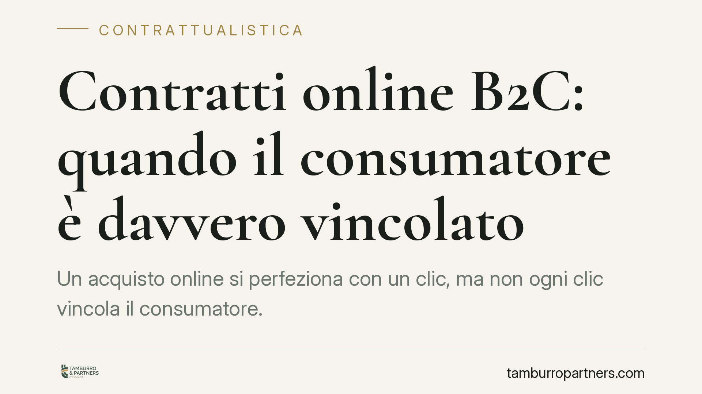

Contratti online B2C: quando il consumatore è davvero vincolato
Un acquisto online si perfeziona con un clic, ma non ogni clic vincola il consumatore. Se il pulsante di conferma non segnala in modo chiaro che l'ordine comporta un obbligo di pagamento, il contratto non produce effetti. Una regola formale con conseguenze concrete, sia per chi acquista sia per chi gestisce un e-commerce.

Il fatto e perché conta
Ogni giorno milioni di contratti nascono con un clic. La rapidità della procedura, però, non riduce le tutele: la legge impone al venditore obblighi precisi sul modo in cui l'ordine viene presentato e confermato. Quando questi obblighi non vengono rispettati, il consumatore può non essere vincolato all'acquisto, anche se ha materialmente premuto il pulsante di conferma.
Il punto critico è proprio la formulazione del pulsante finale. La differenza tra un ordine valido e un ordine inefficace può dipendere da poche parole.
Inquadramento normativo
La disciplina di riferimento è l'art. 51 del Codice del Consumo (d.lgs. n. 206 del 2005), che regola gli obblighi formali dei contratti a distanza. Il comma 2 stabilisce che, quando l'ordine implica un obbligo di pagamento, il professionista deve informare il consumatore in modo chiaro ed evidente. Se l'inoltro dell'ordine avviene tramite un pulsante o una funzione analoga, questa deve riportare in modo facilmente leggibile la dicitura "ordine con obbligo di pagare" o una formula equivalente e altrettanto inequivocabile.
La sanzione è netta: se il professionista non rispetta questa prescrizione, il consumatore non è vincolato dal contratto o dall'ordine. Non serve una controversia complessa; l'inefficacia opera a tutela del consumatore.
La norma si integra con il d.lgs. n. 70 del 2003 sul commercio elettronico, che disciplina le informazioni tecniche da fornire prima dell'inoltro dell'ordine e la conferma di ricezione. La Corte di Giustizia dell'Unione Europea, interpretando la direttiva 2011/83/UE da cui deriva l'art. 51, ha chiarito che la valutazione sulla chiarezza del pulsante va condotta guardando esclusivamente alle parole che vi compaiono, non al contesto complessivo del sito.
Implicazioni pratiche
Per il consumatore la conseguenza è favorevole: un pulsante ambiguo — ad esempio "conferma", "iscriviti" o "prosegui" senza riferimento al pagamento — può rendere l'ordine non vincolante. Ciò significa che è possibile contestare la pretesa di pagamento e chiedere la restituzione di somme eventualmente addebitate.
Per il merchant e per chi gestisce un sito di e-commerce l'esposizione è speculare. Un checkout formulato male non è un dettaglio di design: è un vizio che può travolgere la validità dell'ordine e generare richieste di rimborso, contestazioni e contenziosi seriali, soprattutto su piattaforme con alti volumi di transazioni.
La questione riguarda anche i modelli in abbonamento e i servizi con rinnovo automatico, dove la percezione dell'obbligo di pagamento è spesso meno immediata per l'utente. In questi casi la chiarezza del pulsante e delle informazioni a monte diventa ancora più delicata.
Cosa fare in concreto
- Verificate la formulazione del pulsante di conferma: deve contenere "ordine con obbligo di pagare" o una dicitura equivalente e inequivocabile. Evitate formule generiche come "conferma" o "invia".
- Se siete consumatori e avete ricevuto un addebito inatteso, conservate screenshot del processo di acquisto, in particolare della schermata con il pulsante finale: è la prova decisiva.
- Se gestite un e-commerce, sottoponete a revisione l'intero flusso di checkout, comprese le informazioni precontrattuali richieste dal d.lgs. 70/2003.
- Prestate attenzione ad abbonamenti e rinnovi automatici, dove l'obbligo di pagamento deve essere segnalato con particolare evidenza.
- Documentate le modifiche apportate al processo di ordine, così da poter dimostrare la conformità in caso di contestazione.
La regola del pulsante è un esempio di come, nel commercio elettronico, la forma sia sostanza. Una parola in più o in meno può determinare l'esistenza stessa del vincolo contrattuale.
Consigliamo, sia ai consumatori sia agli operatori, di far esaminare i casi dubbi prima di assumere iniziative: la valutazione della validità di un ordine online richiede l'analisi puntuale del singolo processo di acquisto.
---
Contributo informativo a cura di Tamburro & Partners - Avv. Giuseppe Tamburro. Non costituisce parere legale.
Ogni contratto ha il suo equilibrio.
Se vuoi una revisione delle clausole o una redazione su misura, scrivi allo studio. Ti rispondiamo entro un giorno lavorativo.